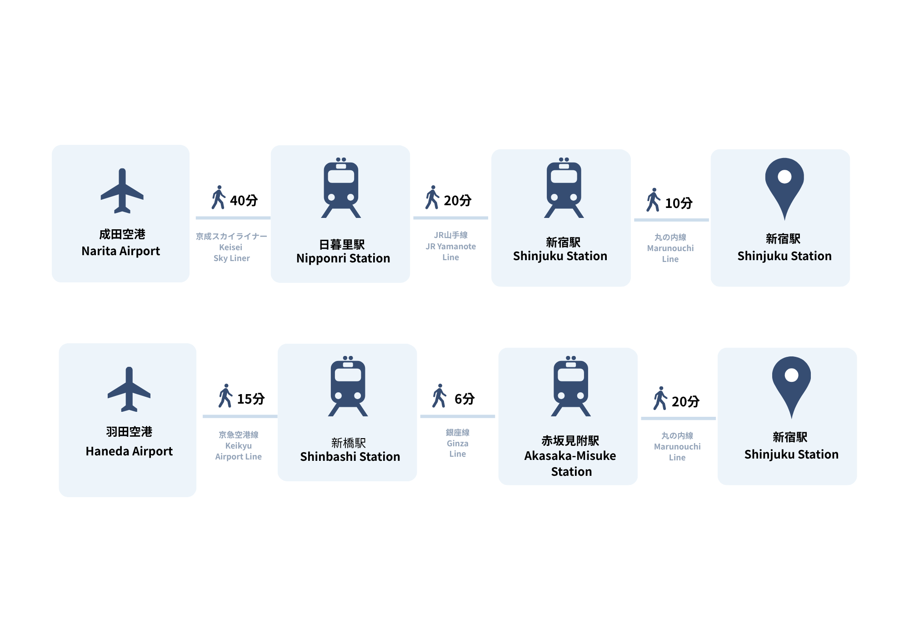
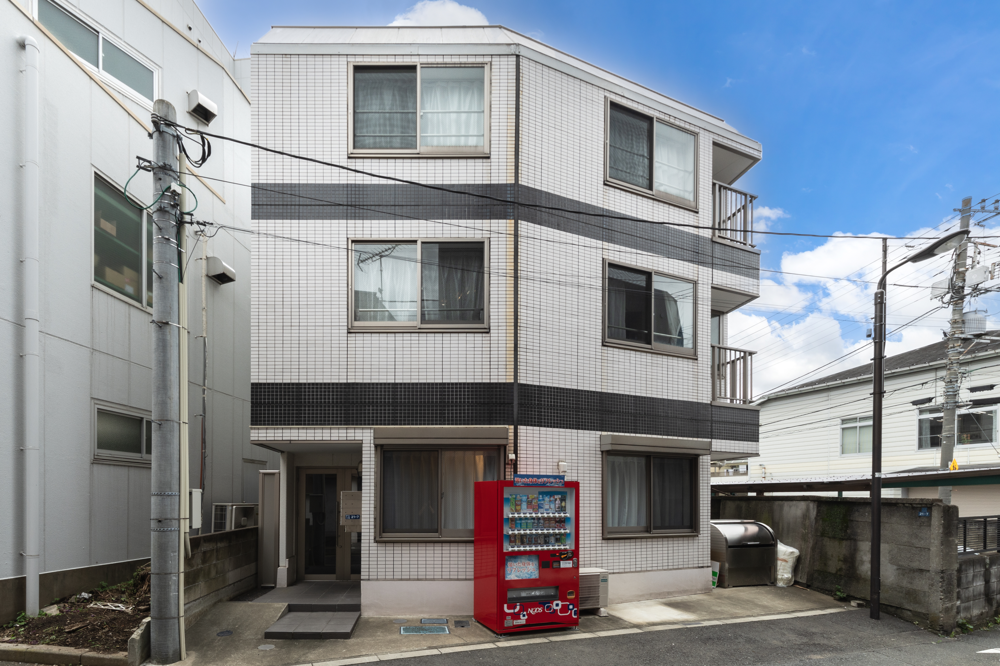
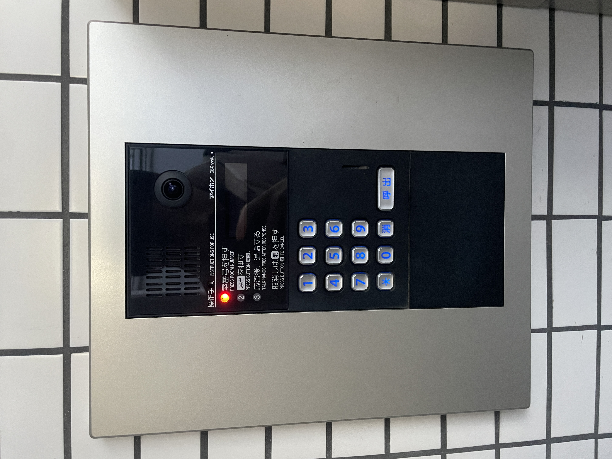
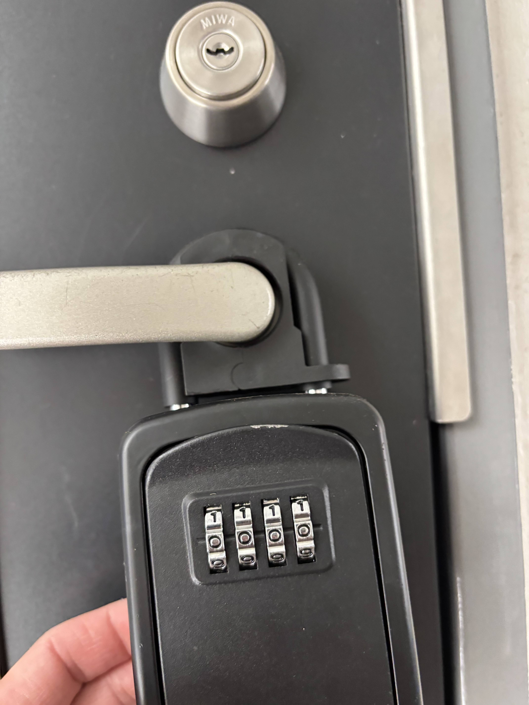
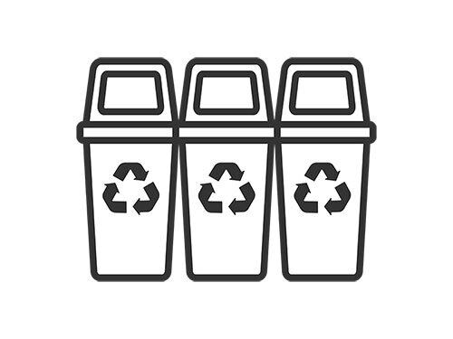
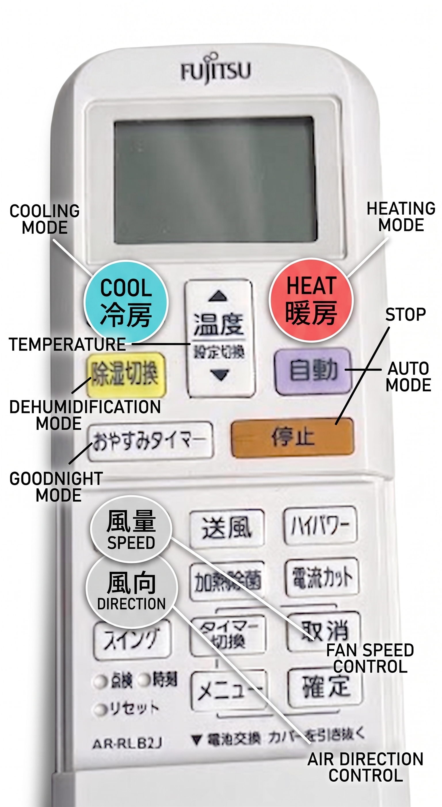
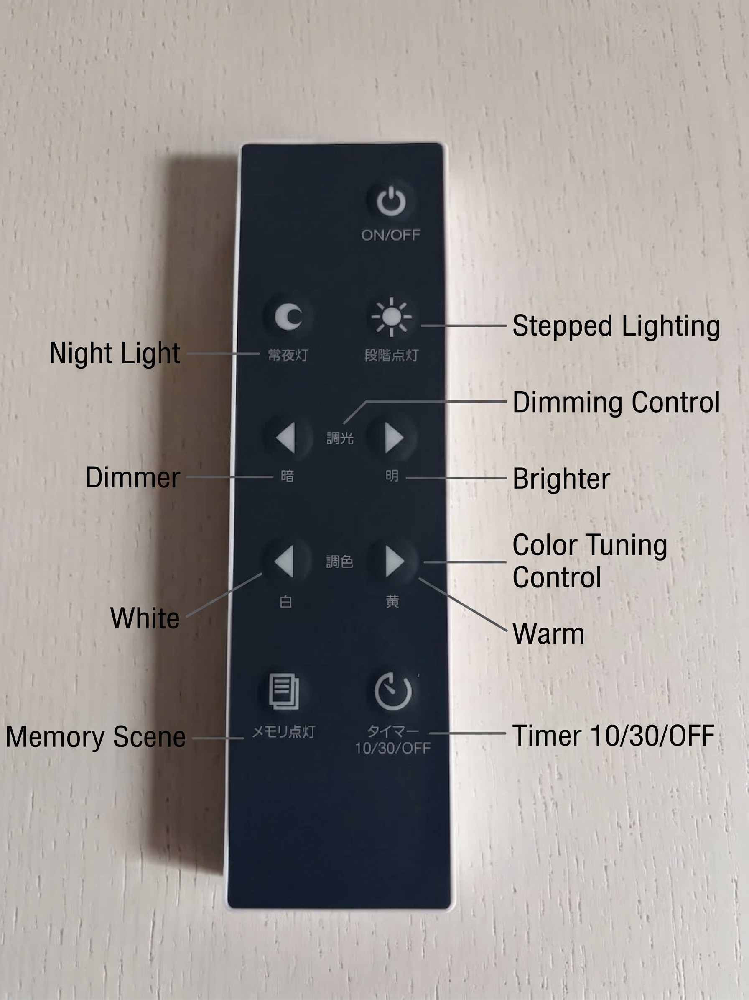
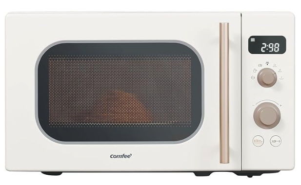
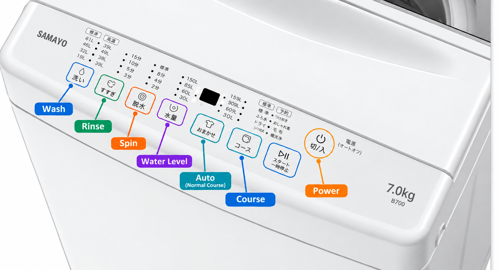
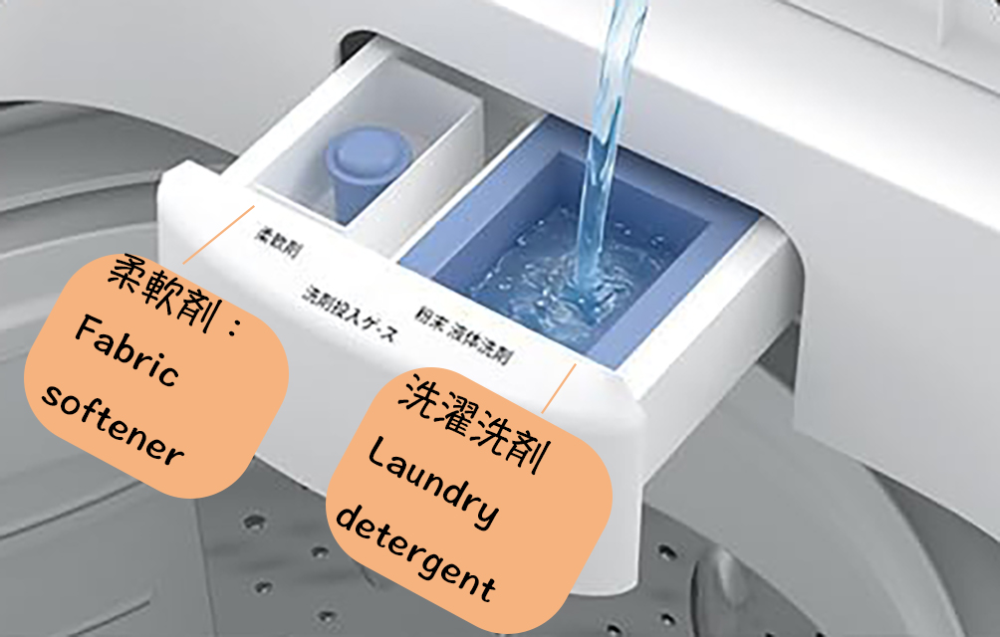

Access Guide
Room Guide
〒131-0041 東京都墨田区八広1-21-7
ヴィラウィスタリア 101号室
101 Villa Wistaria, 1-21-7 Yahiro, Sumida-ku, Tokyo 131-0041
〒131-0041 東京都墨田區八廣1-21-7
維拉紫藤 101號房
〒131-0041 도쿄도 스미다구 야히로 1-21-7
빌라 위스타리아 101호
成田空港・羽田空港から宿泊先までのアクセス案内です。到着の際のご参考にしてください。
Directions from Narita/Haneda Airport to the accommodation. Please refer to this upon arrival.
從成田機場・羽田機場前往住宿地點的交通指南，抵達時請以此作為參考。
나리타/하네다 공항에서 숙소까지 오시는 길 안내입니다. 도착 시 참고해 주시기 바랍니다.

最寄り駅の新高円寺から宿泊先までは徒歩約20分です。
GoogleMapにて道案内をご覧いただけます。
It is a 20 minutes walk from the nearest station, Shin-Koenji Station, to the accommodation.
You can view directions on Google Maps below.
從最近的新高圓寺站步行至住宿地點約需 20 分鐘。
點擊下方按鈕即可查看 Google Maps 路線導覽。
가장 가까운 신코엔지역에서 숙소까지는 도보로 약 20분 소요됩니다.
아래 버튼을 누르시면 Google 지도에서 길 안내를 확인하실 수 있습니다.
当施設の外観とお部屋の位置はこちらです。到着の際のご参考にしてください。
Here is the building exterior and the location of your room. Please use this as a reference upon arrival.
這是本建築的外觀與您的房間位置，抵達時請以此作為參考。
숙소 외관과 객실 위치입니다. 도착 시 참고해 주시기 바랍니다.

チェックイン： 16:00 ～ 21:00
事前にご案内しているゲスト情報入力フォームはご入力済みでしょうか？再度ご入力済みかご確認をお願いいたします。
Check-in: 4:00 PM - 9:00 PM
Have you already filled out the guest information form provided in advance? Please confirm if it has been completed.
入住時間： 16:00 ～ 21:00
請問您是否已填寫事先發送的住客資料表？請再次確認是否已完成填寫。
체크인: 16:00 ～ 21:00
사전에 안내해 드린 게스트 정보 입력 폼을 작성하셨나요? 다시 한 번 작성 여부를 확인해 주시기 바랍니다.
🔑 解錠方法
🔑 How to Unlock
🔑 開鎖方式
🔑 잠금 해제 방법
入り口エントランスにオートロックがございます。呼出ボタンを押したあと、9584を押して解除してください。
There is an auto-lock at the entrance. Press the Call button ("呼"), then enter 9584 to unlock.
入口大門設有自動門鎖。請先按「呼」字鈕後，輸入 9584 即可解鎖。
입구 현관에 오토락이 있습니다. 호출 버튼('呼')을 누른 후 9584를 눌러 해제해 주세요.
玄関のドアノブにキーボックスがあります。解除番号（4151）を合わせると開きますので中の鍵で入室してください。
There is a key box on the front door handle. Align the passcode (4151) to open it, and use the key inside to enter.
房門把手上有鑰匙盒。對齊密碼（4151）即可打開，請使用裡面的鑰匙開門入住。
현관문 손잡이에 열쇠함이 있습니다. 비밀번호(4151)를 맞추면 열리니 안의 열쇠로 입실해 주세요.


チェックアウト： 10:00 まで
チェックアウト時間を過ぎてのご退室には、3万円の超過料金をご請求させていただくことがございます。
鍵はキーボックスへ入れ、キーボックス番号をランダムにご変更の上、ご退出ください。
Check-out: 10:00 AM
A late check-out fee of 30,000 yen may be applied for staying beyond the designated check-out time.
Please place the key back in the key box, scramble the key box numbers, and securely close it before leaving.
退房時間： 10:00 前
若超過退房時間退房，可能需支付 30,000 日圓的額外費用。
離開時請將鑰匙放回鑰匙盒，並隨機撥亂密碼輪。
체크아웃: 10:00 까지
체크아웃 시간을 초과할 경우 3만 엔의 추가 요금이 청구될 수 있습니다.
열쇠는 열쇠함에 넣고 비밀번호 수치를 무작위로 변경하신 후 퇴실해 주십시오.
靴は玄関で脱ぎ、必要に応じてスリッパをご利用ください。
Please take off your shoes at the entrance and feel free to use slippers if needed.
請在玄關脫鞋，如有需要可使用室內拖鞋。
신발은 현관에서 벗고 필요 시 슬리퍼를 이용해 주세요.
💡 電源OFF / Turn Off Power外出時は、エアコン、ルームライトなどその他家電製品の電源はお切りください。
Please turn off the air conditioner, room lights, and other electronic devices when leaving.
外出時請務必關閉空調、電燈等所有電器電源。
외출 시 에어컨, 조명 등 가전제품의 전원을 꺼주세요.
⚠️ 破損・賠償 / Damage Compensation建物や設備、備品を破損した場合、修繕費と営業補償費をご負担頂きます。
In the event of damage to the property or facilities, you will be responsible for repair and compensation costs.
若損壞建築、設備或物品，須承擔修繕費與營業損失賠償。
건물이나 설비, 비품을 손상시킨 경우 수리비 및 영업 보상비를 부담하셔야 합니다.
🤫 安静時間 / Quiet Hours住宅地のため音漏れにご注意ください。特に21～7時の間は会話や音量を控えめにしてください。
Residential area. Please keep noise levels down, especially between 9 PM and 7 AM.
本區為住宅區，易傳遞聲音。特別是 21:00 至 07:00 期間請降低交談與音樂音量。
주택가이므로 소음에 주의해 주세요. 특히 21:00~07:00 사이에는 대화 및 소리를 줄여주시기 바랍니다.
🍽️ 食器洗浄 / Wash Dishes使用した食器や調理器具類は必ず洗ってください。
Please make sure to wash all used dishes and cooking utensils.
使用過的餐具及廚具請務必清洗乾淨。
사용하신 식기 및 조리도구는 반드시 설거지해 주세요.
お手洗いは座ってご利用ください。
Please sit down to use the toilet.
使用馬桶時請坐著使用。
양변기는 앉아서 이용해 주시기 바랍니다.
🧻 トイレットペーパー / Toilet Paperトイレットペーパーはゴミ箱に捨てず、直接便器に入れて流してください。その他の異物は流さないでください。
Do not throw the toilet paper away in the trash bin. Please place the toilet paper in the toilet and flush. Please do not flush anything other than toilet paper.
衛生紙請直接投入馬桶沖掉，切勿扔進垃圾桶。請勿將衛生紙以外的異物丟入馬桶。
화장지는 휴지통에 버리지 마시고 변기에 넣고 물을 내려주세요. 화장지 이외의 이물質은 넣지 마십시오.
💧 水の流し方 / Flushingレバーを押すと水が流れます。
Push the lever down to flush the toilet.
按下沖水槓桿即可沖水。
레버를 누르면 물이 내려갑니다.
ゴミは以下の分別にご協力ください：
Please separate your trash into the following categories:
請將垃圾協助分類為以下類別：
쓰레기는 다음 카테고리로 분리해 주세요:
おまとめいただいたゴミは室内に置いていただくだけでOKです。
Once separated, simply leave the sorted trash inside the room.
分類好的垃圾請直接放在室內即可。
분리하신 쓰레기는 객실 내에 두시면 됩니다.

緊急時のご連絡について
Emergency Contact Information
緊急情況聯絡方式
비상 시 연락 안내
予約サイトのメッセージのほか、緊急時は下記までお電話ください。
For urgent matters, please call the number below in addition to booking site messages.
除了預訂網站訊息外，如有緊急狀況請撥打以下電話：
예약 사이트 메시지 외에도 긴급 시 아래로連絡해 주세요.
TEL：080-4862-7949（10:00 - 19:00）
📞 Call: 080-4862-7949JNTO 24時間多言語コールセンター
JNTO 24-hour Tourist Hotline
JNTO 24小時多語言服務熱線
JNTO 24시간 다국어 콜센터
事故や緊急事態の際、365日24時間対応（英語・中国語・韓国語・日本語）。
Support available 24/7 for accidents or emergencies (EN/ZH/KO/JA).
提供 365天 24小時事故及緊急狀況諮詢支援（中、英、韓、日語）。
사고 및 긴급 상황 시 365일 24시간 지원 (한국어·영어·중국어·일본어).
室内および敷地内は完全禁煙です。
加熱式タバコ・電子タバコを含め、室内での喫煙は固くお断りいたします。
万が一、室内での喫煙が発覚した場合は、清掃費および営業補償料として違約金を請求させていただきます。
Smoking is strictly prohibited inside the room and on the premises.
This includes e-cigarettes and heated tobacco products.
If smoking is detected, a penalty fee for special cleaning and lost business compensation will be charged.
室內及建築敷地內全面禁止吸菸。
包含加熱菸與電子菸在內，嚴禁在室內吸菸。
若發現室內有吸菸行為，將收取特殊清潔費及營業損失補償違約金。
실내 및 부지 내는 전구역 금연입니다.
전자담배 및 권련형 담배를 포함하여 실내 흡연은 엄격히 금지되어 있습니다.
만일 실내 흡연이 적발될 경우 청소비 및 영업 보상비로 위약금이 청구됩니다.
SSID: JCOM_XOCY
Password: 228780496807
ご覧になりたい家電を選択してください：
Please select the appliance you want to view:
請選擇欲查看的家電設備：
확인할 가전제품을 선택해 주세요:




洗剤を入れて電源ボタンを押し、スタートを押してください。
Add detergent, press the power button, and press start.
放入洗劑後按下電源鍵，接著按下啟動（Start）鍵。
세제를 넣고 전원 버튼을 누른 후 시작 버튼을 눌러주세요.


近隣のコンビニ、スーパー、おすすめスポットなどの詳細情報は、下記ボタンよりご覧ください。
Please click the button below to open our online guide map for nearby stores and spots.
周邊便利商店、超市及推薦景點等詳細資訊，請點擊下方按鈕前往查看。
주변 편의점, 마트, 추천 장소 등 상세 정보는 아래 버튼을 클릭하여 확인해 주세요.
🗺️ 周辺ガイドマップを開く 🗺️ Open Nearby Guide Map 🗺️ 開啟周邊地圖 🗺️ 주변 가이드 맵 열기ご宿泊ありがとうございます！
Thank you for staying with us!
非常感謝您的入住！
숙박해 주셔서 감사합니다!
弊社ニューオ株式会社では、民泊や時間貸しのレンタルスペースを運営しております。
NEWO Inc. operates vacation rentals and rental spaces.
NEWO 株式會社營運各類民宿與出租空間。
주식회사 NEWO는 민박 및 렌탈 공간을 운영하고 있습니다.
X (Twitter) @newo_inc Instagram @yukatsu_official_ 詳細・ご予約はこちら Details & Reservations 詳細資訊與預約 상세 정보 및 예약